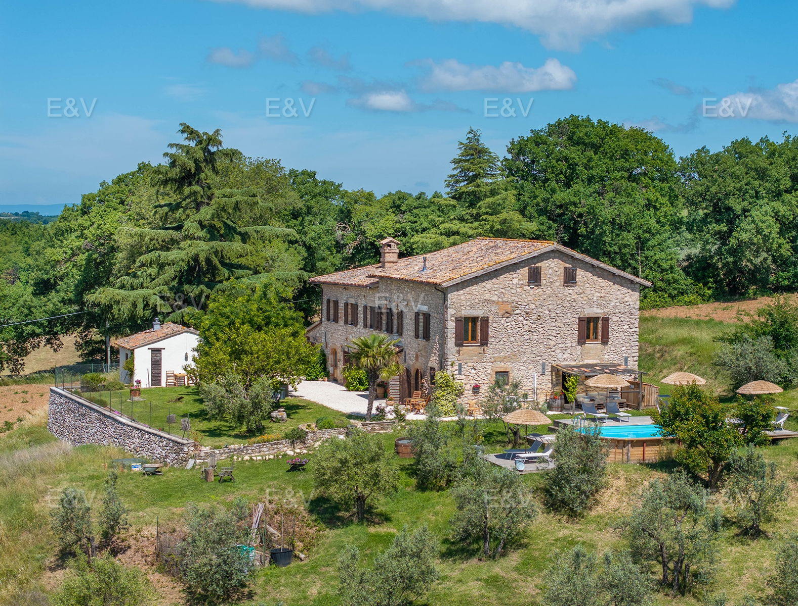

€690.000
Massa Martana, Umbria, Italy
Open the listingHillside stone farmhouse above the Todi–Acquasparta valleys with connectable multi-unit layout, annex, and a private panoramic pool on a wooden deck among olive trees — restored-with-pool bargain under €750k.
Opened 9 Sep 2026 via E&V expose __NEXT_DATA__ (EN+IT). salesPrice €690000. 9 bed / 4 bath / ~500 m² / plot 39700. hasSwimmingPool=True. condition=condition.veryGood. Shop=Assisi-Spoleto. Locale Massa Martana. UUID/ref deduped against board + 09-09 existing files.